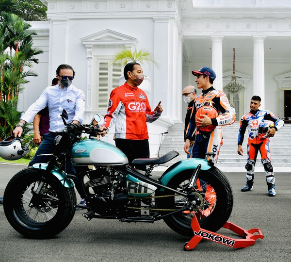
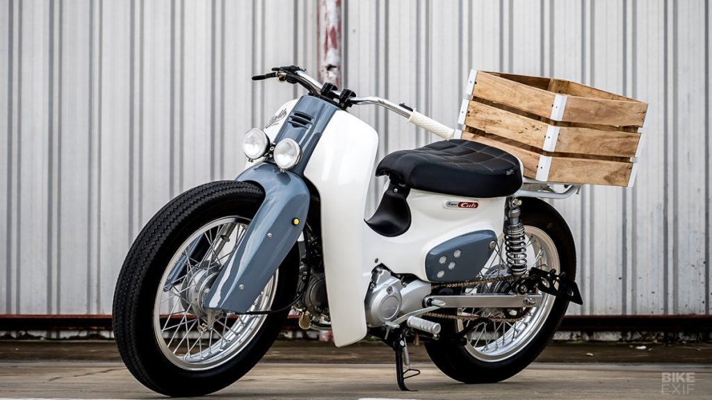
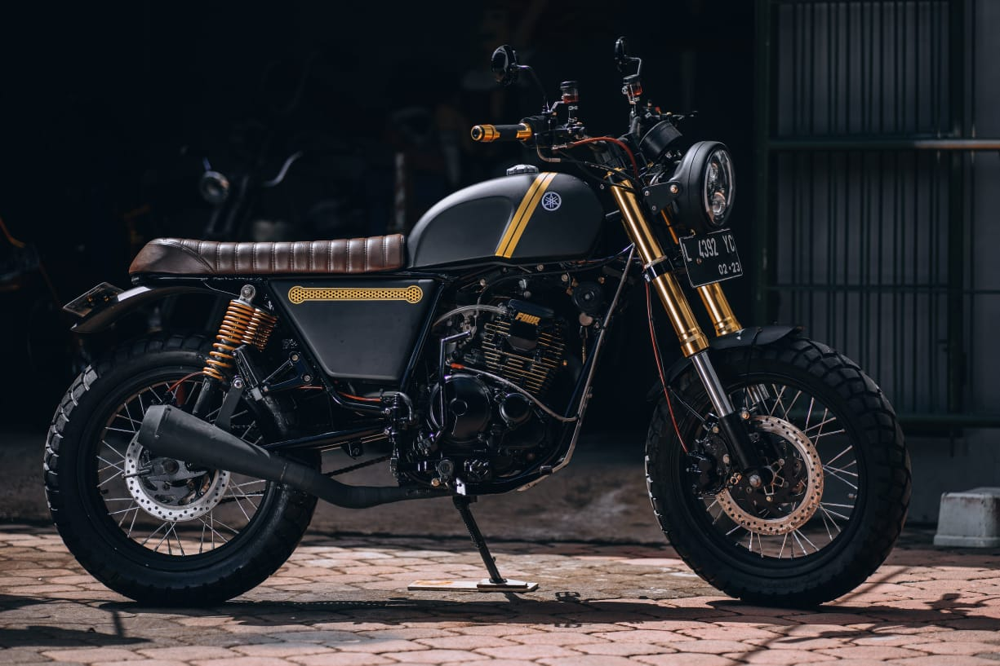
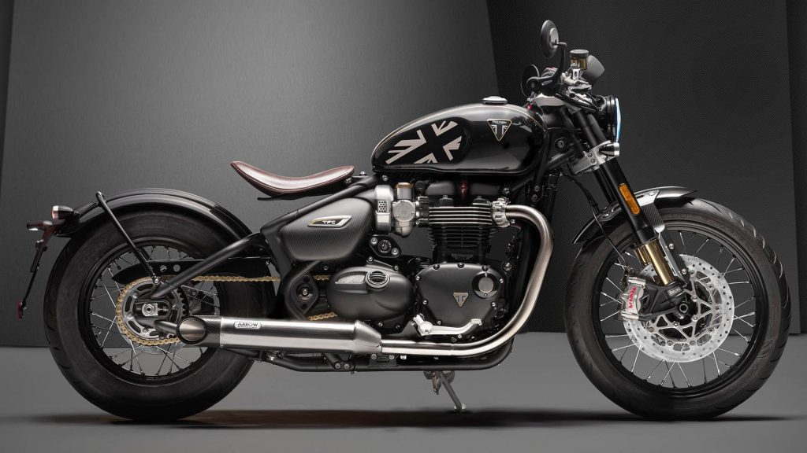
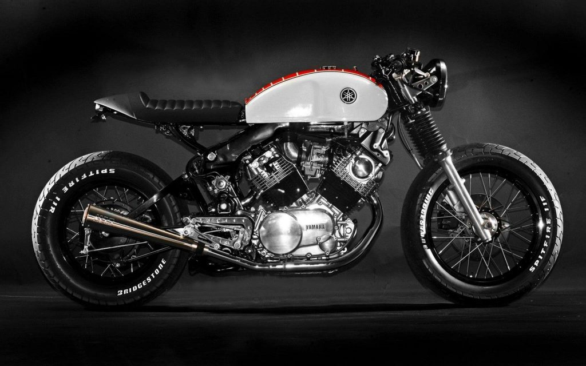
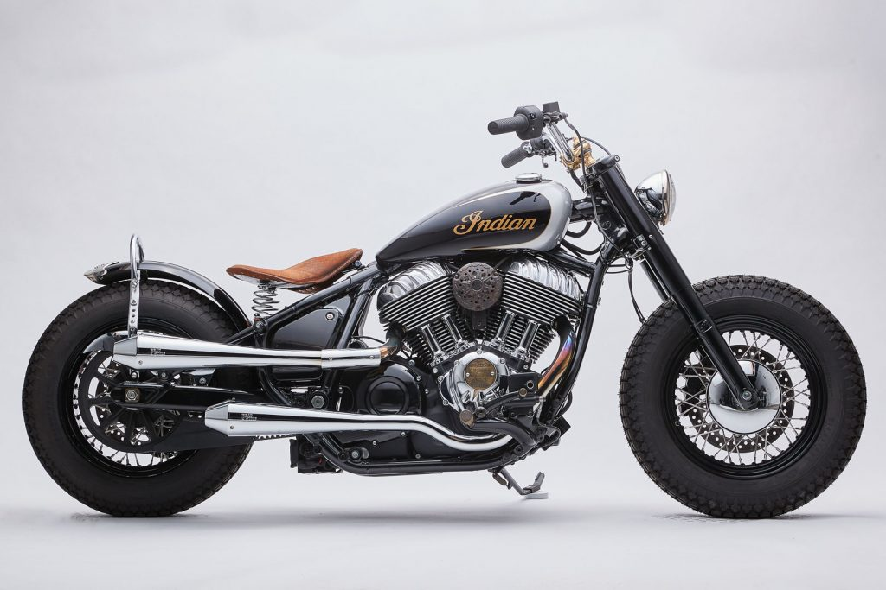
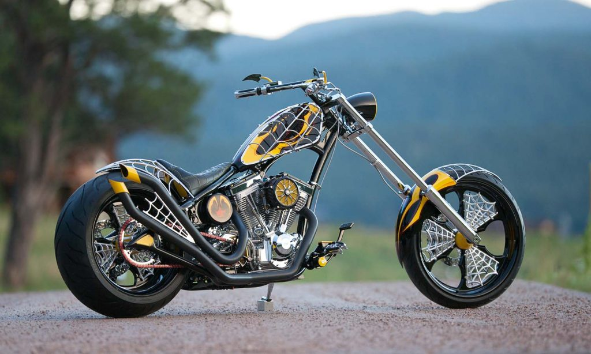

Trend motor custom 2023 yang mulai ramai di kalangan masyarakat
Berita Terkini


Pak jokowi presiden republik indonesia mempunyai motor custom berjenis chopper bobber
Pak jokowi presiden republik indonesia mempunyai motor custom berjenis chopper bobber
Pak jokowi presiden republik indonesia mempunyai motor custom berjenis chopper bobber
Pak jokowi presiden republik indonesia mempunyai motor custom berjenis chopper bobber
Category motor HoldFastCycles
Berikut ini adalah beberapa category dari projek motor custom yang telah kami kerjakan :

Custom Streetcub
Street Cub bisa menjadi jawaban anda apabila ingin memiliki motor custom dengan budget yang murah.
Category: Streetcub

Custom Japstyle
Jap Style didesain untuk nyaman dikendarai untuk motor harian. Sehingga tidak heran kita sering melihat berlalu-lalang di jalanan kota.
Category: Japstyle

Custom Bobber
Bobber memiliki tampilan seperti misil atau roket berotot yang siap menerjang apapun di jalan.
Category: Bobber

Custom Cafe Racer
Jenis motor ini mengambil konsep dari jenis motor balap jaman dahulu yang memiliki ciri khas jok single seater serta memliki bentuk tangki bahan bakar yang cukup ramping dan memanjang.
Category: Cafe Racer

Custom Brat Style
Gaya identik jenis motor ini yaitu memiliki ban besar yang bermotif klasik pada bagian depan dan belakangnya, lalu memiliki tangki chopper dan stang semi hanger.
Category: Brat Style

Custom Chopper
Chopper adalah motor custom khas dengan ukuran ban depan lebih besar dari ban belakang.
Category: Chopper